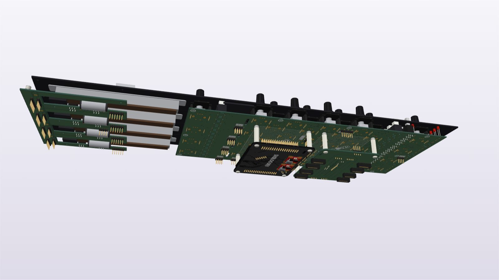

Digital section

So what is this one?
This is the digital half of Digilog, all in one stack. On top is the control surface. Hanging underneath the controls board are the two boards that run it: the STM32 logic board and the DAC board. Each sits on four 20 mm nylon standoffs, screwed into PEM standoffs soldered to the underside of the controls board, where the bottom silkscreen marks out exactly where each board goes. Both boards face up, so their chips point at the controls board above them.
The DAC board is where the digital side reaches over to the analog one: twenty MCP4728 quad 12-bit DACs on four I2C buses make eighty control voltages for the analog cards, and they leave on eight 20-pin headers, two per channel.
The digital boards
The control surface and the STM32 board each open in their own 3D viewer.